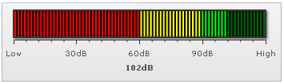

| Creating a simple LED gauge |
LED gauges are similar to the gauges used to display CPU Usage. The values are displayed in an LED gauge by filling up the LED box to that particular level, horizontally in the horizontal LED and vertically in the vertical LED gauge. In this sample that we are going to build, we will be using and referring to the horizontal LED throughout. Now as a first LED gauge, we will be building a sound meter to show the sound produced by a particular equipment on a scale on 0-120dB. The final result will look something as under: |
|  |
The various tasks involved in building this gauge are:
|
| Data for the gauge |
| The XML/JSON for this gauge can be listed as under: |
<chart lowerLimit="0" upperLimit="120" lowerLimitDisplay="Low" upperLimitDisplay="High" palette="1" numberSuffix="dB" chartRightMargin="20"> {
"chart": {
"lowerlimit": "0",
"upperlimit": "120",
"lowerlimitdisplay": "Low",
"upperlimitdisplay": "High",
"palette": "1",
"numbersuffix": "dB",
"chartrightmargin": "20"
},
"colorrange": {
"color": [
{
"minvalue": "0",
"maxvalue": "60",
"code": "FF0000"
},
{
"minvalue": "60",
"maxvalue": "90",
"code": "FFFF00"
},
{
"minvalue": "90",
"maxvalue": "120",
"code": "00FF00"
}
]
},
"value": "102"
} |
The LED gauge for the above data will look as under: |
| See it live! |
| Explanation |
First of all comes the <chart> element which is the starting element for any chart/gauge/graph that you create using FusionWidgets. Now we define the lower and upper limits of the gauge scale. To define the limits, we use the lowerLimit and upperLimit attributes of the <chart> element. We've asked the gauge to show lower limit text as Low and upper limit text as High. We also set the palette number using the palette attribute and number suffix as dB (the character which will show up at the end of the number) using the numberSuffix attribute. |
<chart lowerLimit='0' upperLimit='120' lowerLimitDisplay='Low' upperLimitDisplay='High' palette='1' numberSuffix='dB' chartRightMargin='20' > {
"chart": {
"lowerlimit": "0",
"upperlimit": "120",
"lowerlimitdisplay": "Low",
"upperlimitdisplay": "High",
"palette": "1",
"numbersuffix": "dB",
"chartrightmargin": "20"
}
} |
There are other attributes of the <chart> element which we will not be delving into now, because of this being a really basic gauge. Next, we need to define our color range. As we had earlier seen, this gauge has 3 color ranges. To define the color range, we use the <colorRange> element, which is an immediate child of the <chart> element. Under each <colorRange> element, we place a <color> element specifying a single color range. The minValue attribute is used to define the lower limit of the color range and the maxValue attribute is used to define the upper limit of the color range. The label attribute is used to specify a name to the particular color range and the code attribute specifies the color of the range. |
<colorRange> "colorrange": {
"color": [
{
"minvalue": "0",
"maxvalue": "60",
"code": "FF0000"
},
{
"minvalue": "60",
"maxvalue": "90",
"code": "FFFF00"
},
{
"minvalue": "90",
"maxvalue": "120",
"code": "00FF00"
}
]
} |
| Now that we've the color ranges in place, we need to set the value for the gauge. We do so using the <value> element as shown under: |
|
For detailed explanation on JSON data format click here. |
| And with this, you've created your first LED gauge. Next, we'll see how to customize the various facets of this gauge. |